Начать
Как так вышло, что христианство выросло из иудейской секты в распространенную религию Римской империи?
Как же так?
Предлагаю вам в этом разобраться

Первое миссионерское путешествие
Второе миссионерское путешествие
Третье миссионерское путешествие
Путешествие в Рим
От Республики к Империи
Политическая структура Римской империи
Римское право
Римская армия
Римские дороги
Судебная система и апелляция к кесарю
Законы, религия и новые движения
Cеть городов
Селевкия
12312312 12 312 3123 123
«Путь Павла» — это интерактивная карта про апостола Павла, она работает прокруткой колесика мыши. В карте содержится информация об апостоле и о Римской империи I века.